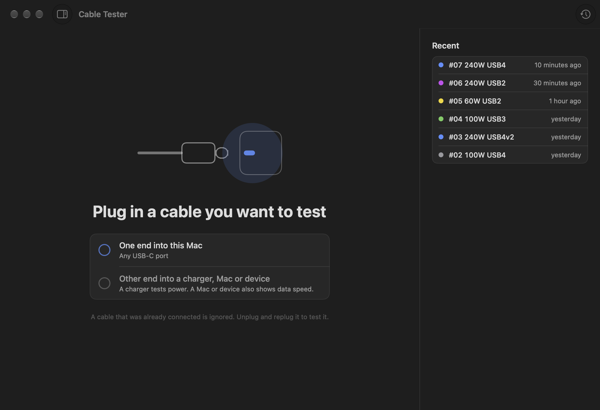
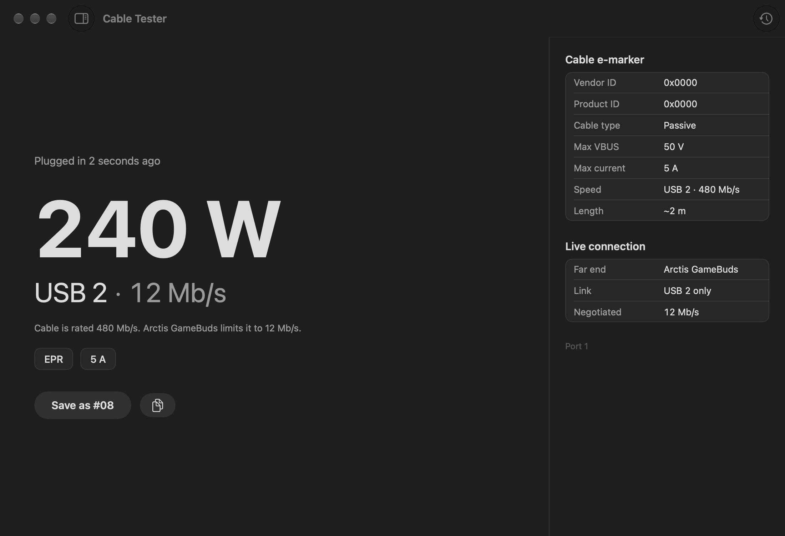

Loops through one test: plug the Mac end in, then the buds, then the result, then unplug.


Timing: each check pops in with a small bounce and draws its tick. The title cross-fades. After the second check, both stay on screen for 0.9 s, then the result fades and scales in. Unplugging fades straight back to the start.